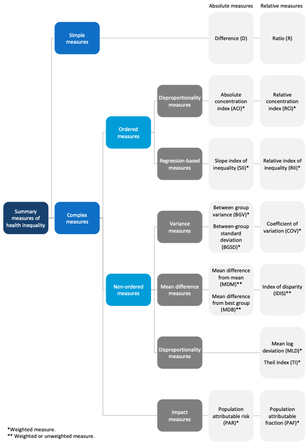
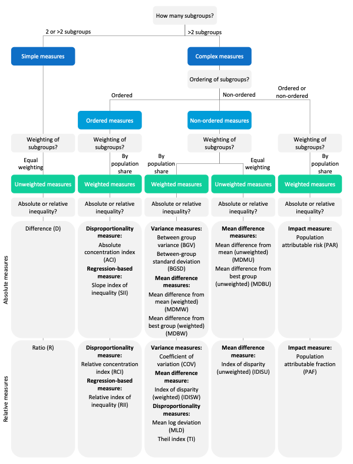

Summary measures
Summary measures build on disaggregated data and present the level of inequality across multiple population subgroups in a single numerical figure. They are useful to compare the situation between different indicators and inequality dimensions and assess changes in inequality over time.
Many different summary measures exist, each with different strengths and weaknesses. Knowing the characteristics of the different summary measures is important so that you can decide which summary measure is suitable for the analysis and interpret results correctly.
Summary measures of inequality can be divided into absolute measures and relative measures. For a given indicator, absolute inequality measures indicate the magnitude of difference between subgroups. They retain the same unit as the indicator.1 Relative inequality measures, on the other hand, show proportional differences among subgroups and have no unit.
Furthermore, summary measures may be weighted or unweighted. Weighted measures take into account the population size of each subgroup, while unweighted measures treat each subgroup as equally sized. Importantly, simple measures are always unweighted and complex measures may be weighted or unweighted.
Simple measures make pairwise comparisons between two subgroups, such as the most and least wealthy. They can be calculated for all indicators and dimensions of inequality. The characteristics of the indicator and dimension determine which two subgroups are compared to assess inequality. Contrary to simple measures, complex measures make use of data from all subgroups to assess inequality. They can be calculated for all indicators, but they can only be calculated for dimensions with more than two subgroups.2
Complex measures can further be divided into those that measure inequality across ordered dimensions of inequality and those that measure inequality in non-ordered dimensions. Ordered dimensions have more than two subgroups that have a natural ordering. Here, the calculation of the summary measure is also influenced by the type of indicator (favourable vs. adverse). Non-ordered dimensions have subgroups that have no natural ordering.3
The software enables the assessment of inequalities using 19 different summary measures of inequality, which are calculated based on the disaggregated data. The following sections give detailed information about the definition, calculation and interpretation of each summary measure. Examples are provided to illustrate how each summary measure can be used and interpreted.
Figure 1 provides an overview of the 19 summary measures and figure 2 presents a decision tree for the selection of appropriate summary measure(s) for the analysis. Annex 1 contains a summary table of all summary measures along with their basic characteristics, formulas and interpretation.
Figure 1 Overview of summary measures

Source: Schlotheuber A, Hosseinpoor AR. Summary Measures of Health Inequality: A Review of Existing Measures and Their Application. International Journal of Environmental Research and Public Health. 2022; 19(6):3697. Link
Figure 2 Decision tree for selecting appropriate summary measures

Source: Schlotheuber A, Hosseinpoor AR. Summary Measures of Health Inequality: A Review of Existing Measures and Their Application. International Journal of Environmental Research and Public Health. 2022; 19(6):3697. Link
💡 DIMENSIONS OF INEQUALITY
- Summary measures build on disaggregated data and present the level of inequality across multiple population subgroups in a single numerical figure
- Different summary measures have different characteristics
- Absolute measures assess absolute differences; Relative measures capture proportional differences between subgroups
- Weighted measures take into account the population size of each subgroup; Unweighted measures treat each subgroup as equally sized
- Simple measures compare the situation between two subgroups; Complex measures consider all subgroups
- Ordered measures are calculated for ordered inequality dimensions with >2 subgroups; Non-ordered measures are calculated for non-ordered inequality dimensions with >2 subgroups
Footnotes
One exception to this is the between-group variance (BGV), which takes the squared unit of the indicator.↩︎
Exceptions to this are the population attributable risk (PAR) and the population attributable fraction (PAF), which can be calculated for all dimensions of inequality.↩︎
Complex measures that quantify inequality for non-ordered dimensions could also be used to measure inequality for ordered dimensions, however, in practice, they are not used for such calculations because they lack information about the directionality of inequality.↩︎